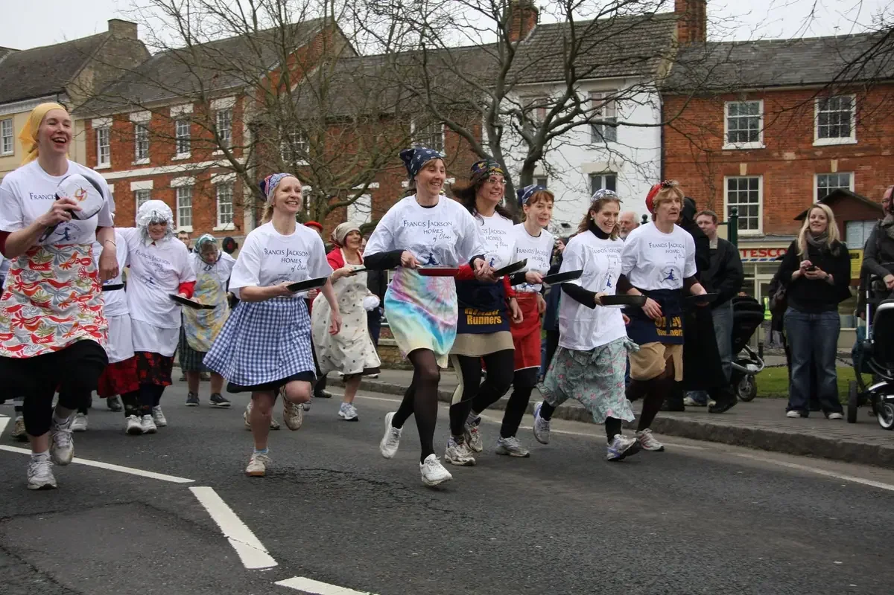
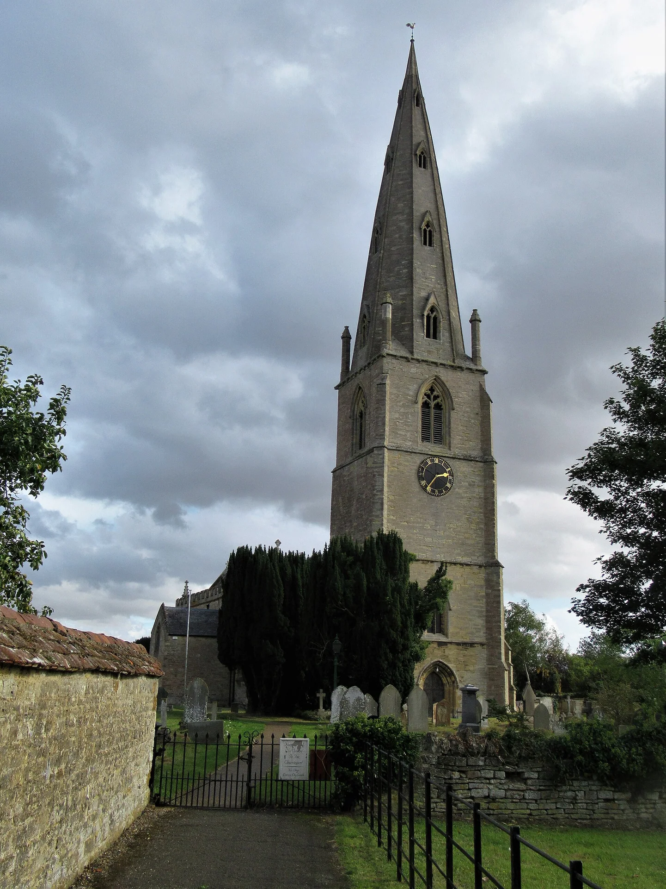
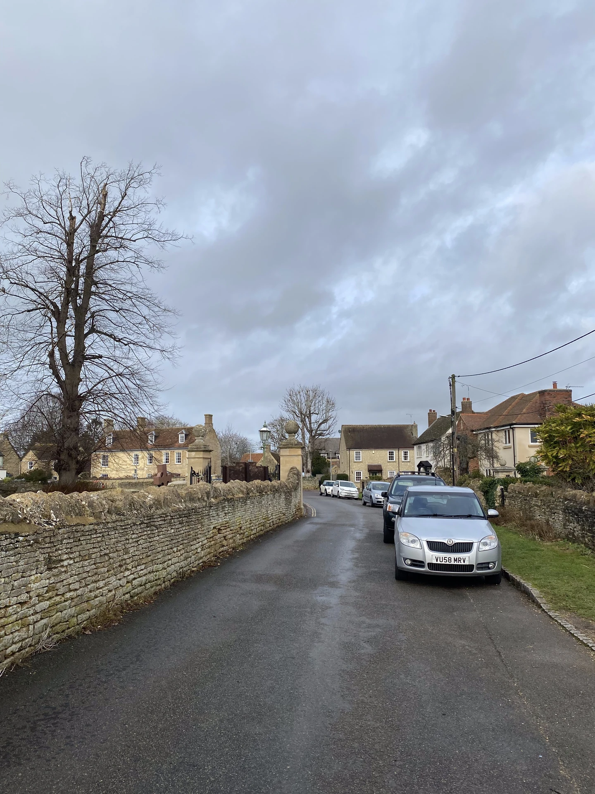

아직 펼치지 않은 카드금식 전날의 잔치 · 1팬케이크 데이와 올니 경주사순절 금식 전날, 영국의 한 마을 여성들은 프라이팬을 들고 달려요. 어디로 달려가는 걸까요?앞치마 입고 프라이팬 들고 달리기 시합을 한대!
참회 화요일 · 1445년이라는 이야기잉글랜드 버킹엄셔 올니
팬케이크 데이와 올니 경주
사순절이 시작되기 전날, 잉글랜드의 작은 장터 마을 올니(Olney)에서는 앞치마를 두른 여성들이 프라이팬을 들고 교회까지 달려요. 1445년에 처음 달렸다고 전해지는 이 경주는, 고해의 종소리를 듣고 프라이팬을 든 채 교회로 달려간 한 주부의 이야기로 널리 알려져 있어요. 지도 위에서 시장 광장부터 교회 앞까지 함께 달려 보세요.
앞치마를 입고 프라이팬을 든 채 교회까지 달리는 경주가 있대! 종이 울리면 출발이야. 같이 달려 볼까?
검수 전 시안이에요(기준서 1판). 장면에는 경주 공식 누리집과 시의회 안내, 교회 조사 기록에 있는 것만 옮겼고, 1445년 이야기는 전해지는 이야기라고 밝혔어요. 경주 길 지도와 종소리는 이 안내서가 만들었어요. 상상은 ‘눈 감고 상상해 보기’에만 썼어요.
시안 확인용카드 단계 미리 보기
1
고해의 종
재의 수요일(사순절이 시작되는 날) 바로 전날을 영국에서는 ‘참회 화요일(Shrove Tuesday)’이라 불러요. 옛 잉글랜드의 그리스도인들은 이날 교회에 가서 죄를 고백하고 용서를 받았어요. 영어로 그것을 ‘슈라이브(shrive)’라고 해서, 이날의 이름이 되었어요.
고백하러 오라고 울리던 종은 훗날 ‘팬케이크 종’이라고 불리게 되었어요. 그 종은 지금도 울려요.

올니는 잉글랜드 버킹엄셔의 작은 장터 마을이에요. 1913년의 조사 기록은 교회가 마을 남쪽 끝에 있다고 적어요. 장터 쪽에서 하이 스트리트를 내려다보면 길 끝에 그 교회의 첨탑이 보여요.
옛날 영국 사람들은 이날 교회에 가서 잘못을 고백했대. 종이 그 시간을 알려 줬어.
물어보기저 끝에 보이는 뾰족한 탑까지, 얼마나 걸릴까?
2
프라이팬을 든 채로
올니의 경주는 1445년에 처음 열렸다고 전해져요. 어떻게 시작됐는지는 이야기가 여럿이에요. 가장 널리 알려진 이야기는, 바쁜 한 주부가 고해의 종소리를 듣고 프라이팬을 손에 든 채 교회로 달려갔다는 거예요.
팬케이크가 종지기에게 주는 선물이었다는 이야기도 있어요. 종을 조금 일찍 울려 달라는 부탁이었다는 거예요. 경주 공식 누리집도 1445년은 ‘전통이 그렇게 말한다’고 적어요.

이야기 속 교회는 지금도 그 자리에 있어요. 1913년 조사 기록은 이 교회의 탑과 첨탑을 14세기 끝 무렵에 지었다고 적어요. 전해지는 1445년보다 앞선 때예요.
경주는 여러 번 끊겼다가, 1948년에 올니 교회의 로널드 콜린스(Ronald Collins) 신부가 되살렸어요. 그해 참회 화요일에 열세 명이 달렸어요. 그보다 앞선 1920~30년대에 찍은 옛 사진도 남아 있어요.
팬케이크를 굽던 사람이 저 뾰족한 탑이 있는 교회까지 달려갔대. 프라이팬은 손에 든 채로!
물어보기팬케이크는 프라이팬 위에 무사히 남았을까?
3
시장 광장에서 처치 스트리트까지
오늘 경주에는 열여덟 살이 넘고 올니에서 석 달 넘게 산 여성들이 나와요. 치마를 입고, 아침에 접수하며 받은 앞치마와 머릿수건을 두르고, 프라이팬에 팬케이크를 담아 출발선에 서요.
경주 길은 415야드(약 380m)예요. 시장 광장에서 하이 스트리트를 따라 내려가, 교회 앞 처치 스트리트에서 끝나요. 출발 종을 울리고 ‘다음 곳으로’를 눌러 함께 달려 보세요.
‘다음 곳으로’를 눌러 시장 광장에서 교회까지 달려 보세요.
 시장 광장하이 스트리트처치 스트리트교회
시장 광장하이 스트리트처치 스트리트교회경주 길잡이 지도 · 실제 거리와 모양은 다를 수 있어요 · 이 안내서가 그린 길잡이 지도 · 경주 공식 누리집의 경주 길과 1913년 교회 조사 기록을 바탕으로
그날 저녁, 우승자는 미국 캔자스주 리버럴(Liberal)과 영상 통화를 해요. 1950년 리버럴이 도전장을 보낸 뒤로 두 마을은 해마다 같은 날 달리고 승패를 나눠 왔어요.
땡땡땡! 종이 울리면 출발이야. 팬케이크를 떨어뜨리지 말고 교회까지!
물어보기달리면서 팬케이크를 안 떨어뜨리려면 어떻게 해야 할까?
4
참회 예배
경주가 끝나면 달린 사람들은 교회의 서쪽 문으로 들어가 맨 앞자리에 앉아요. 40분쯤 이어지는 이 예배가 ‘참회 예배(Shriving Service)’예요. 상도 이 예배에서 받아요.
교회는 이 예배를, 우리의 잘못과 실수를 하나님께 가져가 용서를 바라며, 맑은 마음으로 사순절을 시작하는 시간이라고 소개해요.

예배에서는 늘 ‘올니 찬송’ 몇 곡을 불러요. 18세기에 이 교회를 맡았던 존 뉴턴(John Newton) 신부와 시인 윌리엄 쿠퍼(William Cowper)가 지은 찬송들이에요.
「어메이징 그레이스(Amazing Grace)」도 뉴턴이 이 교회를 맡고 있을 때 지었고, 1773년 1월 1일에 처음 불렸어요. 참회 예배에서는 지금도 모두 이 노래를 함께 불러요. 예배를 마치고 나갈 때 프라이팬과 앞치마, 머릿수건을 돌려줘요.
달리기가 끝나면 다 같이 교회에 들어가서 노래하고 기도해.
물어보기사순절을 시작하기 전에, 마음을 맑게 하려면 무엇을 하면 좋을까?
눈 감고 상상해 보기
2월의 차가운 한낮, 시장 광장에 버터 냄새가 퍼져요. 출발선에 선 프라이팬들이 햇빛에 번쩍이고, 누군가 숨을 크게 들이쉬어요. 손종이 울리는 순간, 앞치마 자락들이 한꺼번에 펄럭이고 길가의 함성이 교회 쪽으로 밀려가요.
눈을 감아 봐. 고소한 팬케이크 냄새! 땡땡 종이 울리면… 출발!
나의 자리
절제의 시간을 앞두고, 나는 무엇을 웃으며 마무리하고 싶나요?
팬케이크를 몇 번이나 뒤집을 수 있을까?
마음에 닿는 한 줄을 고르거나 직접 써 보세요. 한 줄을 남기면 이 자리의 도장이 찍혀요. 이 기기에만 저장돼요.
더 깊이
궁금한 칸만 펼쳐 읽어도 괜찮아요.
알고 보면
종은 두 번 옛 경주에서는 종이 두 번 울렸다고 해요. 첫 종은 팬케이크를 구우라는 알림, 둘째 종은 프라이팬을 들고 광장에 모이라는 신호였어요. 그다음 팬케이크 종이 울리면 출발했어요.
옛 상과 축복 예전에는 교회 문에 먼저 닿은 사람이 신부에게 성경이나 기도서를 받았고, 프라이팬들을 세례대(세례를 주는 물그릇) 둘레에 모아 놓고 축복했다고 전해요.
대서양 건너 기록 첫 국제 경주는 1950년 2월 21일이었어요. 리버럴 청년회장 R. J. 리트(Leete)의 도전에 콜린스 신부가 “경주는 시작됐습니다!” 하고 답했대요. 공식 누리집에 적힌 셈으로는 리버럴이 더 여러 번 이겼어요. 1980년은 뉴스 중계차가 올니의 결승선을 막는 바람에 셈하지 않았어요.
달리는 조각 2014년 경주를 앞두고 시장 광장 모퉁이, 쿠퍼와 뉴턴 박물관 맞은편에 ‘팬케이크 러너’ 조각이 세워졌어요.
기록마다 다른 점
몇 번 뒤집나 경주 공식 누리집과 시의회 안내는 출발선에서 한 번, 결승선을 지나 한 번 뒤집는다고 적어요. 히스토릭 UK의 글은 달리는 동안 세 번 뒤집는다고 적어요.
누구의 입맞춤 히스토릭 UK는 우승자가 종지기에게 팬케이크를 건네고 입맞춤을 받는다고 적어요. 공식 누리집은 교회 버저의 입맞춤을, 신문들은 그것을 ‘평화의 입맞춤’이라고 불러요.
1445년 이 해는 전해지는 이야기예요. 공식 누리집도 ‘전통에 따르면’이라고 적고, 경주가 여러 번 끊겼을 거라고 해요.
직접 가 보기

확인한 날 · 2026년 11월 18일 · 바뀌기 쉬운 정보라 정기적으로 다시 확인해요
경주는 해마다 참회 화요일에 열려요. 2027년 참회 화요일은 2월 9일이에요(부활절 날짜로 계산).
2025년 시간표를 보면, 아침에 시장 광장 천막에서 팬케이크 아침 식사가 있고, 10시부터 어린이 경주가 열렸어요. 달리는 사람들은 11시에 모여 접수하고, 11시 55분에 출발해 정오에 처치 스트리트에서 들어와요. 12시 15분에 교회에서 참회 예배가 열려요.
시간은 해마다 조금씩 달라질 수 있어요. 가기 전에 공식 누리집의 그해 시간표를 확인해 주세요.
시장 광장에서 교회까지 금박
지도 위 네 곳을 끝까지 따라가면 카드에 금박이 입혀져요.
경주 길 네 곳을 끝까지 따라가기
출발 종 채색
둘 가운데 하나만 해도 카드가 채색돼요.
팬케이크 종 울려 보기
아이와 함께 ‘영화처럼 보기’를 끝까지 보기
근거 보기 (14)
- 올니 팬케이크 경주 공식 누리집: Pancake Race History — 1445년에 처음 달렸다는 전통, 고해의 종을 듣고 프라이팬을 든 채 교회로 달려간 주부 이야기, 종지기에게 주는 선물이었다는 이야기, 여러 번 끊김, 1948년 콜린스 신부가 되살림, 열세 명, 1920~30년대 사진, 결승선은 교회 문
- 공식 누리집: Reminders for Running the Race — 18세 이상·석 달 넘게 산 여성, 치마, 접수 때 받는 프라이팬·머릿수건·앞치마, 11시 55분 출발, “팬케이크를 뒤집어요” 뒤 출발 신호와 팬케이크 종, 사진 기자를 위한 헛출발 한 번, 결승선을 지나 한 번 더 뒤집기, 저녁의 리버럴 영상 통화, 참회 예배(서쪽 문·맨 앞자리·40분쯤)에서 상, 나갈 때 돌려주기
- 공식 누리집: Shriving Service — 경주 뒤 성 베드로·성 바울 교회에서, 올니 찬송, 「어메이징 그레이스」, 잘못과 실수를 하나님께 가져가 용서를 바람, 맑은 마음으로 사순절 시작, 뉴턴과 쿠퍼, 1773년 1월 1일 처음 불림
- 공식 누리집: International Competition — 1950년 2월 21일 첫 국제 경주, 리버럴 청년회장 R. J. 리트의 도전과 콜린스 신부의 답, 리버럴이 더 여러 번 이긴 셈, 1980년 뉴스 중계차
- 공식 누리집: 2025년 참회 화요일 시간표 — 11시~11시 45분 접수, 11시 55분 출발(횡단보도 근처), 정오 처치 스트리트 결승, 12시 15분 참회 예배
- 공식 누리집: 2024년 우승 소식 — 415야드, 시장 광장에서 하이 스트리트를 따라 교회 앞 결승까지, 1분 3초 37
- 공식 누리집: 2023년 경주 소식 — 시장 광장 출발선, 우승자가 버저의 입맞춤을 받는 전통
- 히스토릭 UK: Pancake Day — 고해하고 용서받음(shriven), 고해의 종이 ‘팬케이크 종’이 되어 지금도 울림, 달걀과 기름을 써 버림, 올니의 1445년 이야기, 세 번 뒤집기, 종지기의 입맞춤
- 밀턴킨스 시의회: Olney Sculpture and History Walk(PDF) — 2014년 ‘팬케이크 러너’ 조각, 쿠퍼와 뉴턴 박물관 맞은편, 경주는 여기서 출발해 교회에서 끝남, 출발선에서 한 번·결승선에서 한 번 뒤집기
- 버킹엄셔 역사 기념물 조사 2권(1913, British History Online) — 교회는 마을 남쪽 끝, 1330년 무렵 다시 지은 성단, 14세기 끝 무렵 탑과 첨탑
- 히스토릭 잉글랜드: Church of Saints Peter and Paul, Olney — 처치 스트리트에 있음, 14세기 초 건물, 1등급 보호 건물
- 영국 민속춤·노래 협회(EFDSS): Pancake Racing — 옛 경주에서 두 번 울린 종, 교회 문의 성경·기도서 상, 세례대 둘레의 프라이팬 축복
- 밀턴킨스 시티즌: 올니 팬케이크 경주 사진 기사 — 앞치마와 머릿수건, 결승선에서 뒤집기, 버저의 ‘평화의 입맞춤(kiss of peace)’
- 뉴 스테이츠먼(2026년 2월) — 시장 광장에서 교회까지의 길, 길가에 줄지어 선 구경꾼, 11시 55분 출발
그림·사진·소리 출처
- 사진: Steven Haslington · CC BY-SA 2.0 · 위키미디어 공용
- 사진: Poliphilo · 퍼블릭 도메인 · 위키미디어 공용
- 사진: Poliphilo · 퍼블릭 도메인 · 위키미디어 공용
- 이 안내서가 그린 길잡이 지도 · 경주 공식 누리집의 경주 길과 1913년 교회 조사 기록을 바탕으로
- 사진: thejackrustles · CC BY-SA 2.0 · 위키미디어 공용
- 사진: Robin Myerscough · CC BY 2.0 · 위키미디어 공용
- 「팬케이크 종」 손종 소리 · 이 안내서가 만든 컴퓨터 소리(올니의 종을 녹음한 것이 아니에요)
‘처음 만나는 기독교 문화’의 깊은 카드예요. 카드 단계와 남긴 글은 이 기기에만 저장돼요.